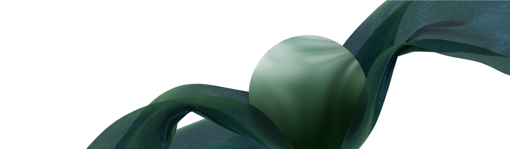

獨特的膜厚控制與貼合技術，更輕更薄、挑戰極限，膜重輕量、機能加倍！ eTINPO 陪你走過每一哩路，是你的第二層肌膚！
eTINPO技術是基於聚丙烯的面料，在極端天氣條件下以各種型態保護你。獨特的透氣性、防水性，確保你面對任何挑戰，無所畏懼。
重新定義機能面料，與自然和諧相處。eTINPO取材於無毒、可重複利用的PP材質，不含PFAS -全氟烷基物質，低碳排製程，膜料經燃燒後，只產生對環境無害的水與二氧化碳。
專業超細微多孔技術，超薄延展性，可與各式專業布料貼合，發揮防水透濕性能，在嚴苛氣候和運動條件下，展現優異效能，保持乾爽舒適，阻擋雨水與低溫、體感不悶熱！